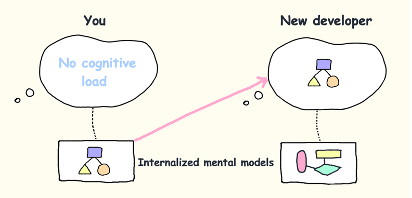

Note
Go to the end to download the full example code.
Plot a Monomer Structure#
This example demonstrates how to parse a monomer PDB file and plot the backbone trace using atomworks.io.
{kind=link}

Custom thumbnail image for this example.#
Key steps: - Load a PDB file - Visualize the backbone trace
## Import libraries
import io
from biotite.database import rcsb
from atomworks.io.utils.io_utils import load_any
from atomworks.io.utils.testing import get_pdb_path
from atomworks.io.utils.visualize import view
def get_example_path_or_buffer(pdb_id: str) -> io.StringIO | str:
try:
return get_pdb_path(pdb_id)
except FileNotFoundError:
return rcsb.fetch(pdb_id, format="cif")
## Load and plot the structure
example = get_example_path_or_buffer("6lyz") # e.g. '/path/to/6lyz.cif' or io.StringIO(rcsb.fetch("6lyz", "cif"))
atom_array = load_any(example, model=1, extra_fields=["charge", "occupancy"])
# ... inspect the first 15 atoms
print(f"Structure has {atom_array.array_length()} atoms. First 15 atoms:")
atom_array[:15]
Structure has 1102 atoms. First 15 atoms:
AtomArray([
Atom(np.array([ 3.287, 10.092, 10.329], dtype=float32), chain_id="A", res_id=1, ins_code="", res_name="LYS", hetero=False, atom_name="N", element="N", occupancy=1.0, charge=0, is_polymer=True),
Atom(np.array([ 2.445, 10.457, 9.182], dtype=float32), chain_id="A", res_id=1, ins_code="", res_name="LYS", hetero=False, atom_name="CA", element="C", occupancy=1.0, charge=0, is_polymer=True),
Atom(np.array([ 2.5 , 11.978, 9.038], dtype=float32), chain_id="A", res_id=1, ins_code="", res_name="LYS", hetero=False, atom_name="C", element="C", occupancy=1.0, charge=0, is_polymer=True),
Atom(np.array([ 2.588, 12.719, 10.041], dtype=float32), chain_id="A", res_id=1, ins_code="", res_name="LYS", hetero=False, atom_name="O", element="O", occupancy=1.0, charge=0, is_polymer=True),
Atom(np.array([1.006, 9.995, 9.385], dtype=float32), chain_id="A", res_id=1, ins_code="", res_name="LYS", hetero=False, atom_name="CB", element="C", occupancy=1.0, charge=0, is_polymer=True),
Atom(np.array([ 0.016, 10.546, 8.377], dtype=float32), chain_id="A", res_id=1, ins_code="", res_name="LYS", hetero=False, atom_name="CG", element="C", occupancy=1.0, charge=0, is_polymer=True),
Atom(np.array([-1.404, 10.093, 8.699], dtype=float32), chain_id="A", res_id=1, ins_code="", res_name="LYS", hetero=False, atom_name="CD", element="C", occupancy=1.0, charge=0, is_polymer=True),
Atom(np.array([-2.269, 10.03 , 7.451], dtype=float32), chain_id="A", res_id=1, ins_code="", res_name="LYS", hetero=False, atom_name="CE", element="C", occupancy=1.0, charge=0, is_polymer=True),
Atom(np.array([-3.559, 9.362, 7.735], dtype=float32), chain_id="A", res_id=1, ins_code="", res_name="LYS", hetero=False, atom_name="NZ", element="N", occupancy=1.0, charge=0, is_polymer=True),
Atom(np.array([ 2.441, 12.404, 7.789], dtype=float32), chain_id="A", res_id=2, ins_code="", res_name="VAL", hetero=False, atom_name="N", element="N", occupancy=1.0, charge=0, is_polymer=True),
Atom(np.array([ 2.396, 13.826, 7.425], dtype=float32), chain_id="A", res_id=2, ins_code="", res_name="VAL", hetero=False, atom_name="CA", element="C", occupancy=1.0, charge=0, is_polymer=True),
Atom(np.array([ 1.003, 14.071, 6.846], dtype=float32), chain_id="A", res_id=2, ins_code="", res_name="VAL", hetero=False, atom_name="C", element="C", occupancy=1.0, charge=0, is_polymer=True),
Atom(np.array([ 0.719, 13.722, 5.679], dtype=float32), chain_id="A", res_id=2, ins_code="", res_name="VAL", hetero=False, atom_name="O", element="O", occupancy=1.0, charge=0, is_polymer=True),
Atom(np.array([ 3.509, 14.142, 6.435], dtype=float32), chain_id="A", res_id=2, ins_code="", res_name="VAL", hetero=False, atom_name="CB", element="C", occupancy=1.0, charge=0, is_polymer=True),
Atom(np.array([ 3.49 , 15.586, 5.874], dtype=float32), chain_id="A", res_id=2, ins_code="", res_name="VAL", hetero=False, atom_name="CG1", element="C", occupancy=1.0, charge=0, is_polymer=True)
])
# ... show the structure in a jupyter notebook
view(atom_array[atom_array.chain_id == "A"])
<py3Dmol.view object at 0x7fa2bcf78860>
Total running time of the script: (0 minutes 3.578 seconds)